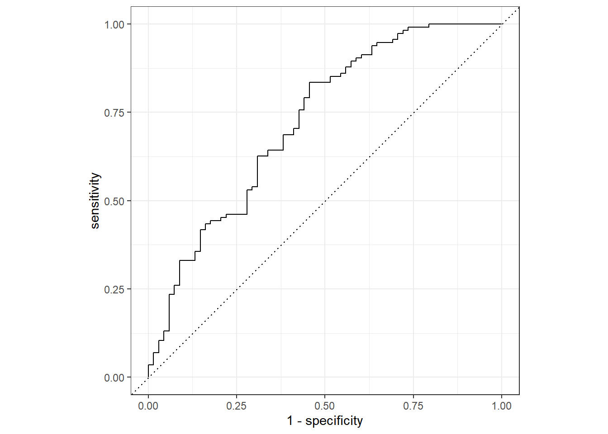
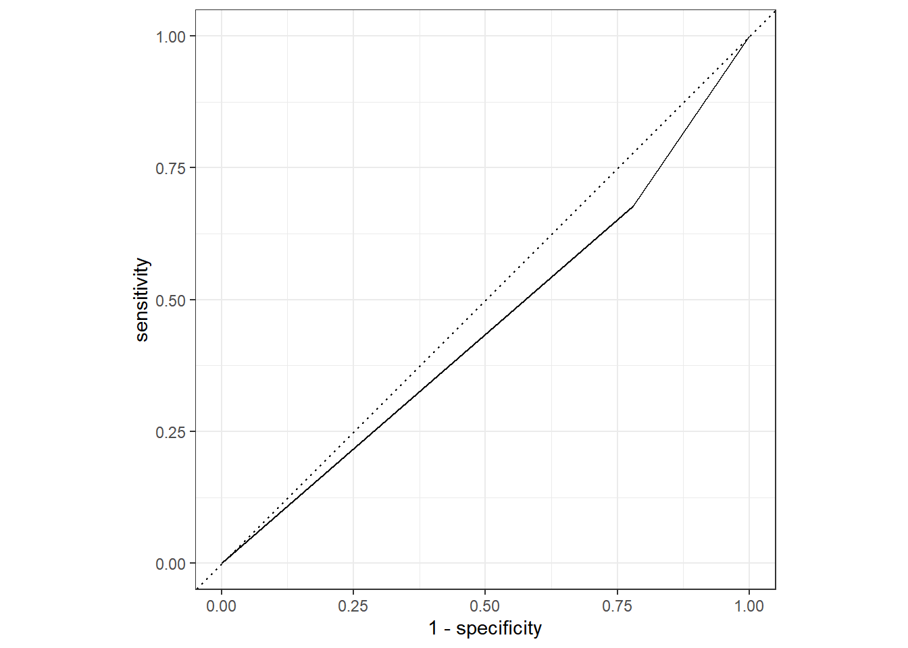

#load necessary packages
library(tidyverse)
library(tidymodels)
library(here)
library(performance)
library(dplyr)
library(yardstick)Flu Analysis
Model Evaluation
This is the final file of a four-part data analysis exercise, conducted on the dataset from McKay et al 2020, found here. This file contains model fitting and model performance evaluation.
Load Data/Packages
#load and view data
flu_data <- readRDS(here::here("fluanalysis", "data", "flu_data_clean.RDS"))
glimpse(flu_data)Rows: 730
Columns: 32
$ SwollenLymphNodes <fct> Yes, Yes, Yes, Yes, Yes, No, No, No, Yes, No, Yes, Y~
$ ChestCongestion <fct> No, Yes, Yes, Yes, No, No, No, Yes, Yes, Yes, Yes, Y~
$ ChillsSweats <fct> No, No, Yes, Yes, Yes, Yes, Yes, Yes, Yes, No, Yes, ~
$ NasalCongestion <fct> No, Yes, Yes, Yes, No, No, No, Yes, Yes, Yes, Yes, Y~
$ CoughYN <fct> Yes, Yes, No, Yes, No, Yes, Yes, Yes, Yes, Yes, No, ~
$ Sneeze <fct> No, No, Yes, Yes, No, Yes, No, Yes, No, No, No, No, ~
$ Fatigue <fct> Yes, Yes, Yes, Yes, Yes, Yes, Yes, Yes, Yes, Yes, Ye~
$ SubjectiveFever <fct> Yes, Yes, Yes, Yes, Yes, Yes, Yes, Yes, Yes, No, Yes~
$ Headache <fct> Yes, Yes, Yes, Yes, Yes, Yes, No, Yes, Yes, Yes, Yes~
$ Weakness <fct> Mild, Severe, Severe, Severe, Moderate, Moderate, Mi~
$ WeaknessYN <fct> Yes, Yes, Yes, Yes, Yes, Yes, Yes, Yes, Yes, Yes, Ye~
$ CoughIntensity <fct> Severe, Severe, Mild, Moderate, None, Moderate, Seve~
$ CoughYN2 <fct> Yes, Yes, Yes, Yes, No, Yes, Yes, Yes, Yes, Yes, Yes~
$ Myalgia <fct> Mild, Severe, Severe, Severe, Mild, Moderate, Mild, ~
$ MyalgiaYN <fct> Yes, Yes, Yes, Yes, Yes, Yes, Yes, Yes, Yes, Yes, Ye~
$ RunnyNose <fct> No, No, Yes, Yes, No, No, Yes, Yes, Yes, Yes, No, No~
$ AbPain <fct> No, No, Yes, No, No, No, No, No, No, No, Yes, Yes, N~
$ ChestPain <fct> No, No, Yes, No, No, Yes, Yes, No, No, No, No, Yes, ~
$ Diarrhea <fct> No, No, No, No, No, Yes, No, No, No, No, No, No, No,~
$ EyePn <fct> No, No, No, No, Yes, No, No, No, No, No, Yes, No, Ye~
$ Insomnia <fct> No, No, Yes, Yes, Yes, No, No, Yes, Yes, Yes, Yes, Y~
$ ItchyEye <fct> No, No, No, No, No, No, No, No, No, No, No, No, Yes,~
$ Nausea <fct> No, No, Yes, Yes, Yes, Yes, No, No, Yes, Yes, Yes, Y~
$ EarPn <fct> No, Yes, No, Yes, No, No, No, No, No, No, No, Yes, Y~
$ Hearing <fct> No, Yes, No, No, No, No, No, No, No, No, No, No, No,~
$ Pharyngitis <fct> Yes, Yes, Yes, Yes, Yes, Yes, Yes, No, No, No, Yes, ~
$ Breathless <fct> No, No, Yes, No, No, Yes, No, No, No, Yes, No, Yes, ~
$ ToothPn <fct> No, No, Yes, No, No, No, No, No, Yes, No, No, Yes, N~
$ Vision <fct> No, No, No, No, No, No, No, No, No, No, No, No, No, ~
$ Vomit <fct> No, No, No, No, No, No, Yes, No, No, No, Yes, Yes, N~
$ Wheeze <fct> No, No, No, Yes, No, Yes, No, No, No, No, No, Yes, N~
$ BodyTemp <dbl> 98.3, 100.4, 100.8, 98.8, 100.5, 98.4, 102.5, 98.4, ~Multivariate Model
Create training and testing datasets from the original data.
#Fix random numbers by setting seed
set.seed(1999)
# Put 3/4 of the data into the training set
data_split <- initial_split(flu_data, prop = 3/4)
# Create data frames for the two sets:
train_data <- training(data_split)
test_data <- testing(data_split)Create recipe and set engine
#create recipe
flu_rec <- recipe(Nausea ~ ., data = train_data)
#set engine
log_reg <-
logistic_reg() %>%
set_engine("glm")Create workflow and fit the training data
#create workflow
flu_flow <-
workflow() %>%
add_model(log_reg) %>%
add_recipe(flu_rec)
#fit to training data
flu_fit <-
flu_flow %>%
fit(data = train_data)Extract model fit
flu_fit %>%
extract_fit_parsnip() %>%
tidy()# A tibble: 38 x 5
term estimate std.error statistic p.value
<chr> <dbl> <dbl> <dbl> <dbl>
1 (Intercept) 8.31 9.74 0.853 0.393
2 SwollenLymphNodesYes -0.279 0.226 -1.23 0.218
3 ChestCongestionYes 0.477 0.252 1.90 0.0580
4 ChillsSweatsYes 0.406 0.338 1.20 0.230
5 NasalCongestionYes 0.568 0.309 1.84 0.0657
6 CoughYNYes -0.218 0.575 -0.380 0.704
7 SneezeYes 0.0698 0.248 0.281 0.779
8 FatigueYes 0.394 0.442 0.891 0.373
9 SubjectiveFeverYes 0.430 0.261 1.65 0.0997
10 HeadacheYes 0.441 0.346 1.27 0.203
# i 28 more rowsFit testing data using model created from training data
predict(flu_fit, test_data)Warning in predict.lm(object, newdata, se.fit, scale = 1, type = if (type == :
prediction from a rank-deficient fit may be misleading# A tibble: 183 x 1
.pred_class
<fct>
1 No
2 Yes
3 No
4 No
5 No
6 No
7 Yes
8 No
9 No
10 Yes
# i 173 more rowsflu_aug <-
augment(flu_fit, test_data)Warning in predict.lm(object, newdata, se.fit, scale = 1, type = if (type == :
prediction from a rank-deficient fit may be misleading
Warning in predict.lm(object, newdata, se.fit, scale = 1, type = if (type == :
prediction from a rank-deficient fit may be misleadingflu_aug %>%
select(Nausea, .pred_No, .pred_Yes)# A tibble: 183 x 3
Nausea .pred_No .pred_Yes
<fct> <dbl> <dbl>
1 No 0.711 0.289
2 Yes 0.105 0.895
3 Yes 0.622 0.378
4 Yes 0.675 0.325
5 Yes 0.606 0.394
6 No 0.664 0.336
7 No 0.448 0.552
8 No 0.665 0.335
9 No 0.617 0.383
10 Yes 0.462 0.538
# i 173 more rowsflu_aug %>%
roc_curve(truth = Nausea, .pred_No) %>%
autoplot()Warning: Returning more (or less) than 1 row per `summarise()` group was deprecated in
dplyr 1.1.0.
i Please use `reframe()` instead.
i When switching from `summarise()` to `reframe()`, remember that `reframe()`
always returns an ungrouped data frame and adjust accordingly.
i The deprecated feature was likely used in the yardstick package.
Please report the issue at <https://github.com/tidymodels/yardstick/issues>.
flu_aug %>%
roc_auc(truth = Nausea, .pred_No)# A tibble: 1 x 3
.metric .estimator .estimate
<chr> <chr> <dbl>
1 roc_auc binary 0.723Univariate Model
Create recipe and set engine
#create recipe
flu_rec2 <- recipe(Nausea ~ RunnyNose, data = train_data)Create workflow and fit the training data
#create workflow
flu_flow2 <-
workflow() %>%
add_model(log_reg) %>%
add_recipe(flu_rec2)
#fit to training data
flu_fit2 <-
flu_flow2 %>%
fit(data = train_data)Extract model fit
flu_fit2 %>%
extract_fit_parsnip() %>%
tidy()# A tibble: 2 x 5
term estimate std.error statistic p.value
<chr> <dbl> <dbl> <dbl> <dbl>
1 (Intercept) -0.582 0.165 -3.52 0.000433
2 RunnyNoseYes -0.104 0.197 -0.525 0.600 Fit testing data using model created from training data
predict(flu_fit2, test_data)# A tibble: 183 x 1
.pred_class
<fct>
1 No
2 No
3 No
4 No
5 No
6 No
7 No
8 No
9 No
10 No
# i 173 more rowsflu_aug2 <-
augment(flu_fit2, test_data)
flu_aug2 %>%
select(Nausea, .pred_No, .pred_Yes)# A tibble: 183 x 3
Nausea .pred_No .pred_Yes
<fct> <dbl> <dbl>
1 No 0.642 0.358
2 Yes 0.665 0.335
3 Yes 0.642 0.358
4 Yes 0.665 0.335
5 Yes 0.665 0.335
6 No 0.665 0.335
7 No 0.642 0.358
8 No 0.642 0.358
9 No 0.642 0.358
10 Yes 0.665 0.335
# i 173 more rowsflu_aug2 %>%
roc_curve(truth = Nausea, .pred_No) %>%
autoplot()
flu_aug2 %>%
roc_auc(truth = Nausea, .pred_No)# A tibble: 1 x 3
.metric .estimator .estimate
<chr> <chr> <dbl>
1 roc_auc binary 0.449This section added by Raquel Francisco
Working with continous variable (BodyTemp)
##Will use as much as premade data/code as possible
#create recipe
flu_rec3 <- recipe(BodyTemp ~ ., data = train_data)
#reset engine
lm_reg <-
linear_reg() %>%
set_engine("lm")
#create workflow
flu_flow3 <-
workflow() %>%
add_model(lm_reg) %>%
add_recipe(flu_rec3)
#fit to training data
flu_fit3 <-
flu_flow3 %>%
fit(data = train_data)
flu_fit3 %>%
extract_fit_parsnip() %>%
tidy()# A tibble: 38 x 5
term estimate std.error statistic p.value
<chr> <dbl> <dbl> <dbl> <dbl>
1 (Intercept) 98.3 0.343 286. 0
2 SwollenLymphNodesYes -0.135 0.102 -1.33 0.186
3 ChestCongestionYes 0.0318 0.110 0.289 0.772
4 ChillsSweatsYes 0.221 0.142 1.55 0.121
5 NasalCongestionYes -0.276 0.129 -2.14 0.0332
6 CoughYNYes 0.345 0.256 1.35 0.178
7 SneezeYes -0.401 0.111 -3.61 0.000336
8 FatigueYes 0.207 0.179 1.15 0.249
9 SubjectiveFeverYes 0.432 0.114 3.78 0.000178
10 HeadacheYes -0.00791 0.143 -0.0553 0.956
# i 28 more rows#Use a trained workflow to predict
predict(flu_fit3, train_data)Warning in predict.lm(object = object$fit, newdata = new_data, type =
"response"): prediction from a rank-deficient fit may be misleading# A tibble: 547 x 1
.pred
<dbl>
1 98.2
2 99.1
3 99.5
4 98.7
5 98.8
6 98.6
7 99.6
8 98.5
9 98.5
10 99.2
# i 537 more rows#On trained data
flu_aug3train <-
augment(flu_fit3, train_data)Warning in predict.lm(object = object$fit, newdata = new_data, type =
"response"): prediction from a rank-deficient fit may be misleadingflu_aug3train %>%
select(BodyTemp, .pred)# A tibble: 547 x 2
BodyTemp .pred
<dbl> <dbl>
1 97.4 98.2
2 100. 99.1
3 102. 99.5
4 98.7 98.7
5 98.8 98.8
6 99.9 98.6
7 98.7 99.6
8 98.7 98.5
9 99.3 98.5
10 99.4 99.2
# i 537 more rows#flu_aug3train %>%
# rmse(BodyTemp , .pred)#Unable to get this to run!)
#On test data
flu_aug3test <-
augment(flu_fit3, test_data)Warning in predict.lm(object = object$fit, newdata = new_data, type =
"response"): prediction from a rank-deficient fit may be misleadingflu_aug3test %>%
select(BodyTemp, .pred)# A tibble: 183 x 2
BodyTemp .pred
<dbl> <dbl>
1 100. 99.4
2 101. 98.7
3 98.4 99.2
4 98.1 98.2
5 98.2 98.4
6 100. 99.1
7 99.5 99.4
8 101. 98.9
9 98.8 99.4
10 98.1 99.4
# i 173 more rows#flu_aug3test %>%
# rmse(BodyTemp , .pred) #Unable to get this to run!Univariate Model
#create recipe
flu_rec4 <- recipe(BodyTemp ~ Myalgia, data = train_data)
#create workflow
flu_flow4 <-
workflow() %>%
add_model(lm_reg) %>%
add_recipe(flu_rec4)
#fit to training data
flu_fit4 <-
flu_flow4 %>%
fit(data = train_data)
flu_fit4 %>%
extract_fit_parsnip() %>%
tidy()# A tibble: 4 x 5
term estimate std.error statistic p.value
<chr> <dbl> <dbl> <dbl> <dbl>
1 (Intercept) 98.6 0.151 652. 0
2 MyalgiaMild 0.278 0.176 1.58 0.115
3 MyalgiaModerate 0.349 0.169 2.06 0.0400
4 MyalgiaSevere 0.444 0.199 2.23 0.0261#Use a trained workflow to predict
predict(flu_fit4, train_data)# A tibble: 547 x 1
.pred
<dbl>
1 98.9
2 98.9
3 98.9
4 98.9
5 98.9
6 98.9
7 98.9
8 99.0
9 98.9
10 98.9
# i 537 more rows#On trained data
flu_aug4train <-
augment(flu_fit4, train_data)
flu_aug4train %>%
select(BodyTemp, .pred)# A tibble: 547 x 2
BodyTemp .pred
<dbl> <dbl>
1 97.4 98.9
2 100. 98.9
3 102. 98.9
4 98.7 98.9
5 98.8 98.9
6 99.9 98.9
7 98.7 98.9
8 98.7 99.0
9 99.3 98.9
10 99.4 98.9
# i 537 more rows#flu_aug4train %>%
# rmse(BodyTemp , .pred)#Unable to get this to run!
#On test data
flu_aug4test <-
augment(flu_fit4, test_data)
flu_aug4test %>%
select(BodyTemp, .pred)# A tibble: 183 x 2
BodyTemp .pred
<dbl> <dbl>
1 100. 99.0
2 101. 99.0
3 98.4 98.9
4 98.1 98.6
5 98.2 98.9
6 100. 98.9
7 99.5 98.9
8 101. 99.0
9 98.8 98.6
10 98.1 98.9
# i 173 more rows#flu_aug4test %>%
# rmse(BodyTemp , .pred) #Unable to get this to run!Unable to get RMSE to work after troubleshooting via several help pages.